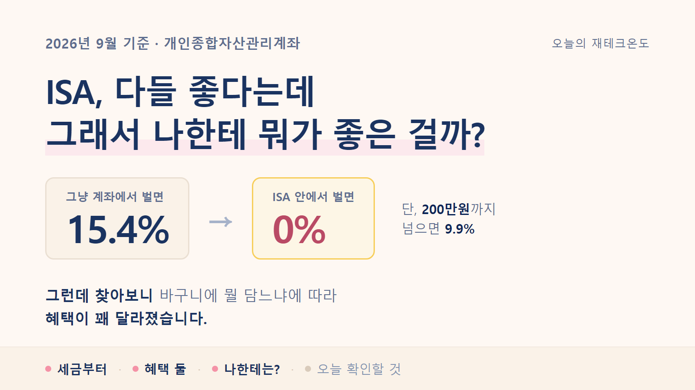
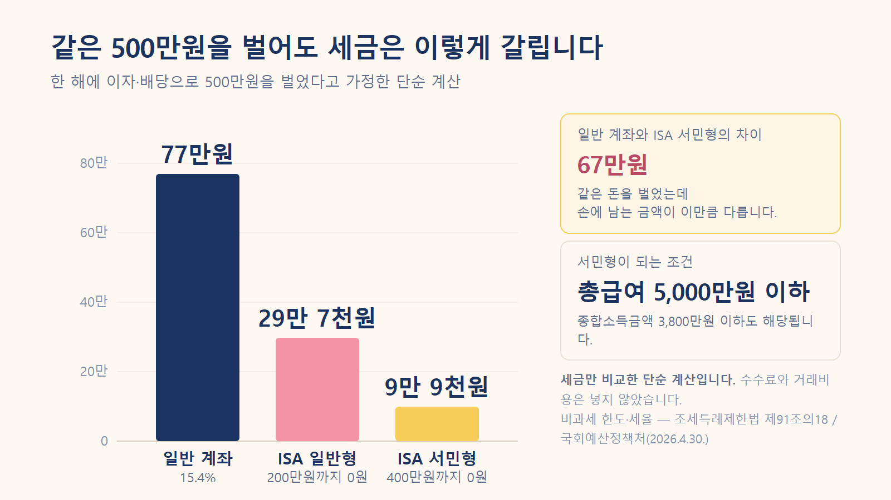
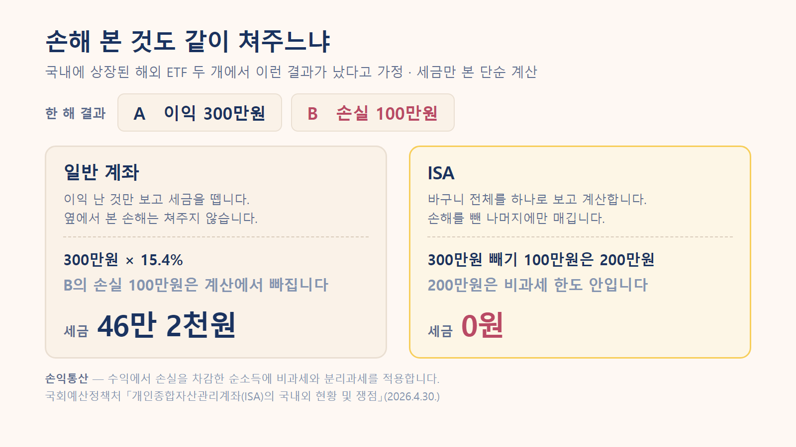

ISA 이야기를 참 오래 들었습니다.
통장 하나쯤 만들어두라고, 안 만들면 손해라고요.
그런데 누가 "그게 뭐가 좋은데?" 하고 물으면 저는 대답을 못 했습니다. 세금을 깎아준다는 것까지는 아는데, 뭘 얼마나 깎아주는지를 몰랐거든요.
그래서 한번 제대로 찾아봤습니다.
찾아보니 좋은 점도 분명했고, 저한테는 생각보다 덜 좋은 부분도 있었어요.
저는 한동안 ISA를 예금 같은 상품이라고 생각했습니다. 아니었어요.
ISA는 상품이 아니라 계좌입니다.
빈 바구니라고 보면 됩니다. 그 안에 예금도 넣고, 펀드도 넣고, ETF나 국내 주식도 넣을 수 있어요.
바구니 자체가 돈을 벌어주지는 않습니다. 안에 뭘 담느냐는 여전히 내가 정해야 해요.
대신 이 바구니에는 딱 하나 특별한 게 있습니다.
바구니 안에서 번 돈에 붙는 세금을 깎아줍니다.
정식 이름은 개인종합자산관리계좌입니다. 이름이 길어서 보통 ISA라고 부릅니다.
혜택이 얼마나 큰지 보려면 원래 얼마를 내는지부터 알아야 하더라고요. 저는 이 순서를 건너뛰어서 계속 감이 안 왔던 것 같습니다.
예금 이자나 주식 배당금처럼 돈이 돈을 벌어다 준 소득에는 세금이 붙습니다.
세율은 15.4%입니다.
100만원을 벌었으면 15만 4천원이 빠지고 84만 6천원이 들어옵니다. 내가 신고하는 게 아니라 받을 때 이미 떼고 들어와요. 그래서 세금을 낸다는 느낌도 잘 안 듭니다.
이자·배당소득 원천징수세율 15.4%(소득세 14% + 지방소득세 1.4%) · 소득세법
이 15.4%가 앞으로 나올 이야기의 기준선입니다.
ISA 안에서 번 돈은 200만원까지 세금을 매기지 않습니다.
여기서 제가 처음에 잘못 알아들었던 게 있어요.
200만원을 넣는다는 뜻이 아닙니다. 200만원을 번다는 뜻입니다.
원금이 아니라 수익 기준이에요. 2천만원을 넣어서 200만원을 벌었다면, 그 200만원에 세금이 안 붙습니다.
200만원을 넘으면요? 그때도 15.4%는 아닙니다. 넘은 부분에만 9.9%가 붙습니다.
그리고 이 한도는 소득에 따라 두 배가 됩니다.
| 구분 | 조건 | 세금 안 내는 금액 |
|---|---|---|
| 일반형 | 아래에 해당하지 않는 경우 | 200만원 |
| 서민형 | 총급여 5,000만원 이하 | 400만원 |
| 농어민형 | 종합소득금액 3,800만원 이하인 농어민 | 400만원 |
국회예산정책처 「개인종합자산관리계좌(ISA)의 국내외 현황 및 쟁점」(2026-04-30) · 조세특례제한법 제91조의18 · 원문 보기
총급여 5,000만원이면 직장인 중에 해당하는 분이 꽤 많습니다. 저도 여기서 "어? 나 서민형이네" 했어요.
숫자로 보면 차이가 이렇게 납니다. 한 해에 500만원을 벌었다고 해볼게요.
| 어디에 담았나 | 세금 |
|---|---|
| 일반 계좌 | 77만원 |
| ISA 일반형 | 29만 7천원 |
| ISA 서민형 | 9만 9천원 |
계산은 이렇게 나왔습니다.
일반 계좌 500만원 × 15.4% = 770,000원
ISA 일반형 200만원 → 0원
300만원 × 9.9% = 297,000원
ISA 서민형 400만원 → 0원
100만원 × 9.9% = 99,000원세금만 놓고 본 단순 계산입니다. 수수료나 거래비용은 넣지 않았어요.

같은 500만원을 벌었는데 서민형이면 67만원이 남습니다. 한 달 통신비 몇 달치예요.
저는 이게 더 컸습니다.
일반 계좌는 이익 난 것만 보고 세금을 뗍니다. 옆에서 손해를 봤어도 안 봐줘요.
예를 들어 국내에 상장된 해외 ETF 두 개를 샀는데 결과가 이렇게 났다고 해볼게요.
A +300만원
B −100만원
실제로 내 손에 남은 것: 200만원일반 계좌라면 A에서 번 300만원에 세금이 붙습니다. B에서 잃은 100만원은 그냥 없는 셈 칩니다.
300만원 × 15.4% = 462,000원ISA는 다릅니다. 바구니 전체를 하나로 보고 계산합니다.
300만원 − 100만원 = 200만원
200만원은 비과세 한도 안 → 세금 0원같은 투자를 했는데 46만 2천원이 갈립니다.

손익통산 — 국회예산정책처 「ISA의 국내외 현황 및 쟁점」(2026-04-30) · 원문 보기
투자를 하다 보면 전부 오르는 경우는 잘 없죠. 이것저것 담을수록 이 부분이 커집니다.
여기서부터 제가 좀 김이 빠졌습니다.
찾다 보니 이런 내용이 나왔어요.
국내 주식은 팔아서 남긴 차익에 원래 세금이 없습니다.
대주주가 아닌 보통의 개인이 국내 상장주식을 사고팔아 남긴 돈에는 양도차익 세금이 붙지 않아요. ISA에 넣든 안 넣든 똑같이 0원입니다.
그러니까 국내 개별주식만 사고파는 사람이라면 ISA로 아낄 수 있는 세금이 생각보다 적습니다.
물론 아예 없는 건 아니에요. 두 가지가 남습니다.
반대로 ISA가 확실히 세게 작동하는 쪽도 있었습니다.
국내에 상장된 해외 ETF입니다.
이건 사고팔아서 남긴 차익도 배당소득으로 봅니다. 즉 팔 때마다 15.4%를 뗍니다. 게다가 다른 ETF에서 손해를 봐도 통산이 안 돼요.
앞에서 본 46만 2천원 차이가 바로 이 경우였습니다.
국내 상장주식·펀드의 양도차익은 비과세(대주주 제외), 배당금은 배당소득으로 과세 / 국내 상장 해외펀드는 양도차익과 분배금 모두 배당소득으로 과세 — 국회예산정책처 「ISA의 국내외 현황 및 쟁점」 각주 9·10 · 원문 보기
정리해보니 ISA가 도움이 되는 정도는 내가 뭘 담느냐에 따라 꽤 달랐습니다.
예금 이자, 배당금, 국내 상장 해외 ETF가 많을수록 커집니다. 국내 개별주식 매매 위주면 작아지고요.
공짜는 아니겠죠. 조건을 봤습니다.
| 항목 | 내용 |
|---|---|
| 유지 기간 | 3년 |
| 연간 넣을 수 있는 돈 | 2,000만원 (못 채우면 다음 해로 이월) |
| 전체 한도 | 1억원 |
| 계좌 수 | 1인 1계좌 |
| 가입 나이 | 19세 이상 (15세 이상은 근로소득이 있으면 가능) |
국회예산정책처 「ISA의 국내외 현황 및 쟁점」(2026-04-30) [표 1] · 원문 보기
3년이 제일 걸렸습니다. 목돈이 3년간 잠기는 건가 싶었어요.
그런데 찾아보니 넣은 원금은 중간에 뺄 수 있었습니다.
3년을 채워야 하는 건 세금 혜택을 받기 위한 조건이에요. 계좌를 3년간 유지해야 비과세가 확정됩니다. 원금은 그 안에서도 인출이 됩니다. 다만 번 돈은 못 빼요. 그건 만기까지 둬야 합니다.
연 2,000만원 한도도 처음엔 커 보였는데, 실제 통계를 보니 좀 다르게 느껴졌습니다.
한 사람당 평균 가입금액이 710만원입니다. 한도의 3분의 1 수준이에요.
2026년 2월 말 기준 · 금융투자협회 ISA 다모아 자료를 국회예산정책처가 정리 · 원문 보기
한도가 모자라서 못 넣는 사람보다, 한도를 다 못 채우는 사람이 훨씬 많다는 뜻입니다. 저도 그쪽이고요.
이건 찾다가 알게 된 건데 잘 안 알려진 것 같아요.
3년이 지나 만기가 오면 보통 돈을 찾습니다. 그런데 그 돈을 연금저축이나 IRP로 옮기면 세금을 한 번 더 돌려받을 수 있습니다.
옮긴 금액의 10%만큼 연금계좌 세액공제 한도가 늘어납니다. 최대 300만원까지요.
조건이 하나 있습니다. 만기일부터 60일 안에 옮겨야 합니다.
3,000만원을 옮겼다고 해보면 이렇게 됩니다.
3,000만원 × 10% = 300만원 (세액공제 한도가 이만큼 늘어남)
총급여 5,500만원 이하 300만원 × 16.5% = 495,000원
총급여 5,500만원 초과 300만원 × 13.2% = 396,000원연말정산 때 40~50만원을 더 돌려받는 셈입니다.
소득세법 시행령 제118조의2(계약기간 만료일부터 60일 이내 연금계좌 납입) · 연금계좌 세액공제율은 국세청 안내
다만 이건 그냥 좋은 게 아니라 맞바꾸는 겁니다.
연금계좌는 55세 이후에 연금으로 받는 걸 전제로 세금을 깎아주는 계좌예요. 그전에 찾으면 돌려받았던 세금을 다시 토해내야 합니다.
당장 쓸 돈이면 옮기지 않는 게 맞습니다.
여기가 제일 헷갈렸던 부분입니다.
ISA를 검색하면 이런 글이 정말 많이 나옵니다.
2026년부터 납입한도가 연 4,000만원으로 늘고, 비과세도 500만원으로 확대됩니다
저도 처음엔 그런 줄 알았어요. 그런데 국회예산정책처 보고서를 보다가 각주에서 이런 문장을 발견했습니다.
2024년 정부 세법개정안은 현행 ISA 납입한도 및 비과세한도 확대와 국내투자형 ISA를 신설하고 금융소득종합과세자의 가입을 허용하는 내용을 포함하였으나, 국회 심사 과정에서 수직적 형평성 저해 등의 우려가 제기되면서 개정세법에 반영되지 않음
국회예산정책처 「ISA의 국내외 현황 및 쟁점」(2026-04-30) 각주 11 · 원문 보기
그러니까 4,000만원, 500만원은 2024년에 정부가 내놓았던 안이었습니다. 국회를 통과하지 못했고, 시행된 적이 없습니다.
지금 검색에 뜨는 글 상당수가 그때 나온 개정안 숫자를 이미 시행된 제도인 것처럼 쓰고 있었어요.
| 인터넷에서 자주 보이는 숫자 | 실제로 지금 적용되는 숫자 |
|---|---|
| 연 4,000만원 / 총 2억원 | 연 2,000만원 / 총 1억원 |
| 비과세 500만원 (서민형 1,000만원) | 비과세 200만원 (서민형 400만원) |
왼쪽 숫자를 보고 계획을 세우면 실제로는 절반에서 막힙니다.
올해도 움직임이 있긴 했습니다. 다만 방향이 반대였어요.
8월 3일에 나온 2026년 세제개편안에는 국내 투자 전용인 생산적금융 ISA를 새로 만드는 내용이 담겼습니다. 그러면서 기존 일반 ISA는 계약기간을 최대 5년으로 제한하고 한도 이월도 없애겠다는 내용이 함께 들어갔습니다.
기존 가입자들 사이에서 반발이 있었고요.
그리고 9월 1일 국무회의에서 이 축소안이 빠졌습니다. 계약기간 제한도, 이월 폐지도 하지 않는 것으로 정부안이 확정됐습니다.
2026년 세제개편안 정부안 국무회의 확정(2026-09-01) · 파이낸셜뉴스 기사 보기 / 당초 개편안(2026-08-03)은 헤럴드경제 기사 보기
다만 이것도 아직 정부안입니다. 국회 심사가 남아 있어요.
2024년에도 정부안이 국회에서 그대로 통과되지 않았습니다. 그래서 저는 확정된 이야기로 받아들이지 않기로 했습니다.
지금 계좌를 만든다면 기준은 연 2,000만원, 비과세 200만원(서민형 400만원)입니다.
찾아본 걸 제 기준으로 정리해보니 이렇게 갈렸습니다.
효과가 크게 나는 쪽
지금 당장은 급하지 않은 쪽
마지막 줄이 좀 허무하게 들릴 수도 있는데, 저한테는 이게 제일 정직한 답이었습니다.
ISA는 번 돈에 붙는 세금을 깎아주는 장치입니다. 벌어들이는 게 아직 적으면 깎일 것도 적어요.
그렇다고 의미가 없는 건 아닙니다. 계좌를 만들어두면 3년 시계가 그날부터 돌아가니까요. 나중에 수익이 커졌을 때 3년을 새로 기다리지 않아도 됩니다.
딱 하나만 확인해보면 좋겠습니다.
작년 총급여가 5,000만원 이하인지.
이 한 줄로 세금 안 내는 금액이 200만원과 400만원으로 갈립니다. 앞에서 봤듯이 같은 500만원을 벌어도 세금이 29만 7천원과 9만 9천원으로 달라져요. 조건을 채우는데 몰라서 일반형으로 만드는 게 제일 아깝습니다.
숫자는 회사에서 받은 원천징수영수증이나 홈택스 지급명세서에 적혀 있습니다. 연말정산 서류를 그대로 두셨다면 거기 있어요.
다음에 ISA 이야기가 또 나오면 이 질문에 답할 수 있으면 됩니다.
나는 지금 어떤 소득에 세금을 내고 있고, 그중 어떤 게 이 바구니 안에서 깎이는가.